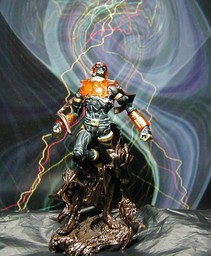

S.I.C. 匠魂 Vol. 3 キカイダー０１ シークレット ver.

S.I.C. 匠魂 vol.3 のキカイダー０１のシークレットバージョンです。私のこれまでの匠魂の写真には TV などのオリジナルをもとにしたノーマル版を使っています。 しかし、匠魂にはアーティストカラーと呼ばれる版もあり、出来の良い物もあるのですが、いってしまえば、工程短縮が図られた版があります。また、そのような物の他に一つの volume に一つシークレット版という物があり、これは、別カラーリングではあるが TV 版でも出た特殊形態だったり、アーティストカラーの亜種であったりします。ちなみに、初期の volume についてはクリアカラー版という物もあったようです。 さて、今回の０１はアーティストカラーの亜種としてのシークレットです。そういうわけなので数は少ないのかもしれませんが、シークレットのくせに人気の高いノーマルカラーよりも低いプレミアしか付いていません。私もノーマルが欲しかったけどたまたまシークレットが手に入ってしまったクチです。 大きさはノーマル版と同じ。背景は Winamp の MilkDrop プラグインを WinShot したものです。 <b>参考</b> 《気分屋な記聞／レアとシークレット》 更新：06/02/12,2006-03-16 初公開：2006年02月12日 22:00:09 最新版：2006年03月16日 20:21:42 Links: S.I.C.: http://www.tamashii.jp/sic/ MilkDrop: http://www.milkdrop.co.uk/ WinShot: http://www.woodybells.com/winshot.html 気分屋な記聞／レアとシークレット: http://type-98.lix.jp/area_01/topics/2004_6/89_secret.htm